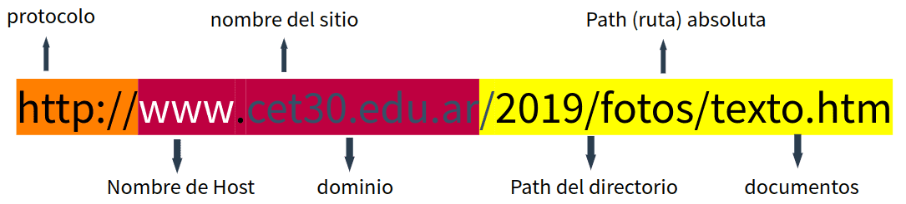
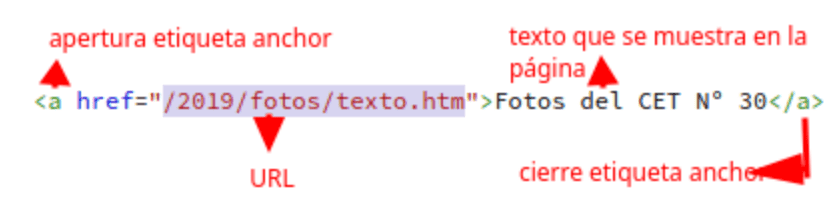

1.1¿qué es una URL?
la URL es una cadena de texto que especifica dónde puede encontrarse un recurso
(página, imagen, video, sonido, etc.) en Internet. Es también conocido como dirección WEB o enlace.

1.2¿qué es una url absoluta?
Las URL absolutas proporcionan la URL completa del documento,
incluido el protocolo (http: // o https: //), el nombre de dominio y la ruta como necesario
1.3¿qué es una url relativa?
Las URL relativas describen la ruta a un archivo relativo al actual documento.

1.4¿cuál es la diferencia entre una url relativa y una url absoluta?
la diferencia es que la relativa describe la ruta a un archivo relativo al actual documento y
la absoluta proporcionan la URL completa del documento incluido el protocolo.
1.5Crear tres enlaces absolutos a tres recursos. Los recursos deben ser PDF, PNG, TXT
pdf
txt
1.6¿qué es un directorio? ¿qué relación hay con una carpeta?
Un directorio es un tipo exclusivo de archivo que sólo contiene la información necesaria para acceder a archivos
o a otros directorios.
1.7En la estructura de un proyecto web, ¿a qué se llama directorio raíz? ¿Con qué símbolo se representa?
es el directorio principal que, en los sistemas operativos parecidos a Unix, contiene todos los demás directorios
y archivos, lo cuales operan con
lo que se conoce como un sistema jerárquico y se designan con una barra diagonal y/o inclinada (/).
1.8 Un archivo XLS que deseamos enlazar se encuentra alojado en el servidor de nuestra institución educativa,
dentro de la carpeta de recursos compartidos llamada "documentos". Dentro de esta carpeta, hay otra subcarpeta
llamada "excel", donde se encuentra específicamente el archivo que necesitamos, llamado "datos_estudiantes.xls".
Sabiendo que el protocolo utilizado es https y nuestra institución es el CET Nº30. Armar la url absoluta para
dicho archivo
/home/urieltorres/documento/excel/datos_estidiantes.xls
1.10- ¿Cuál es el propósito de la etiqueta anchor?
el proposito de la <a></a> es enclar un enlace hacia otras pagina,archivo o ubicacion dentro de la
misma pagina.
1.11- ¿Qué atributo se utiliza en la etiqueta anchor para especificar la URL a la que debe enlazar?
el atrbuto que utiliza la etiqueta anchor para la URL a la que debe anlazar "href=""
1.12- ¿Qué sucede si el atributo "href" en la etiqueta anchor está vacío?
lo que sucede es directamente no mostrara ningun enlace
1.13- ¿Cuál es el uso del atributo "target" en la etiqueta anchor y cuáles son los posibles valores que puede
tener?
El atributo target u objetivo describe cómo es que las usuarias o usuarios van a ser redirigidos con el
hipervínculo. Estos son los valores más comunes: "_self": es el valor predeterminado que usan los hipervínculos
para abrir un link dentro de la misma pestaña o ventana en la que se generó el clic.
1.14- Entonces ¿qué es un hipervínculo?
crea un acceso directo que salta a otra ubicación del libro actual o abre un documento almacenado en un servidor
de red, un intranet o Internet
📚 Organizar las materias de 4to año
📁 Paso 1: Crear la carpeta "Materias" en el proyecto actual 📁
🤝 Paso 2: Agrupar materias en dos categorías 🤝
Dentro de la carpeta "Materias", crea dos grupos para las materias de 4to año: "Aula" y "Taller". De esta manera podemos categorizar las páginas.
📄 Paso 3: Crear páginas para cada materia 📄
En cada materia, crear una página. Cada página debe tener:
🔹 Título de la materia
🔹 Enlace para volver al inicio
📊 Paso 4: Crear el archivo index.html 📊
En la carpeta "Materias", crea un archivo llamado `index.html`. Aquí irá el listado de todas las materias de 4to año, organizadas por los dos grupos que creaste.
En el listado, agrega un hipervínculo para cada materia que te lleve directamente a la página correspondiente.
Utiliza las etiquetas que hemos visto como em, strong, img y otras 🎉
¡Éxitos!
{kind=link}
{kind=link}